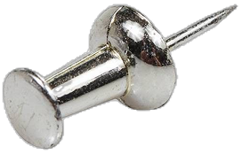
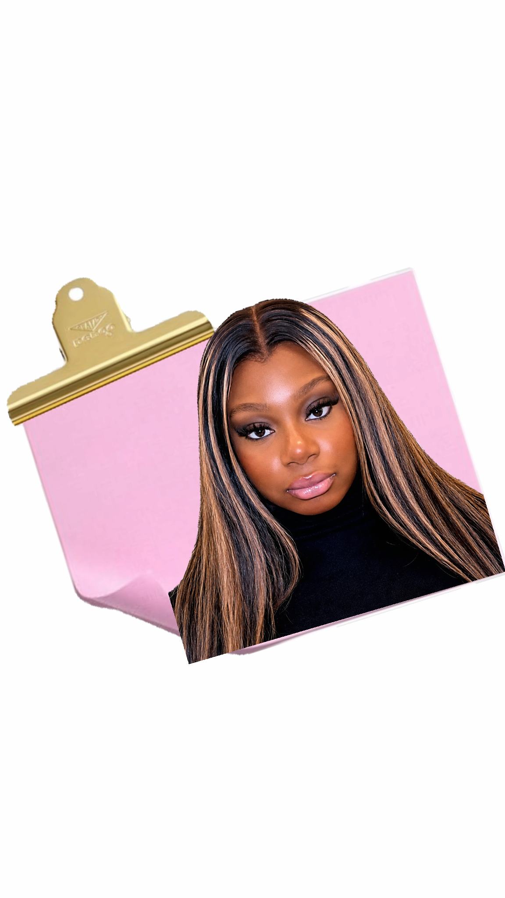
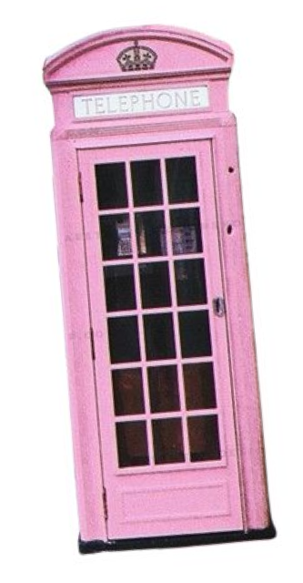
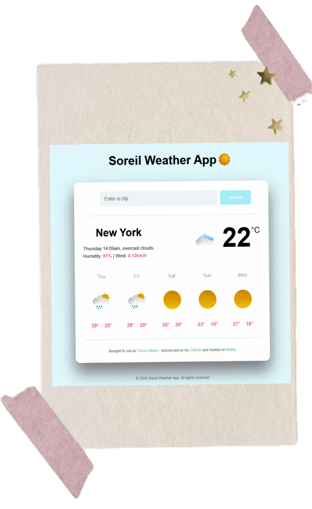
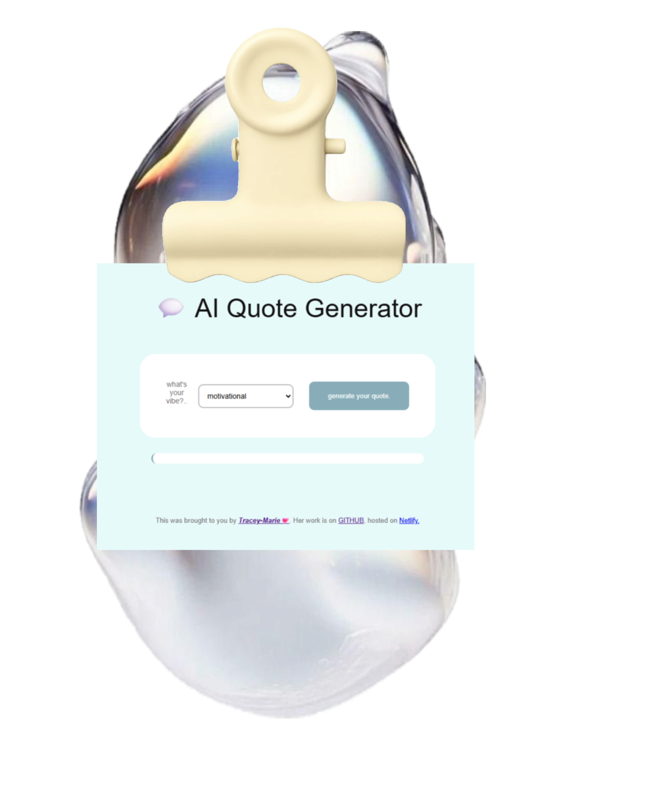
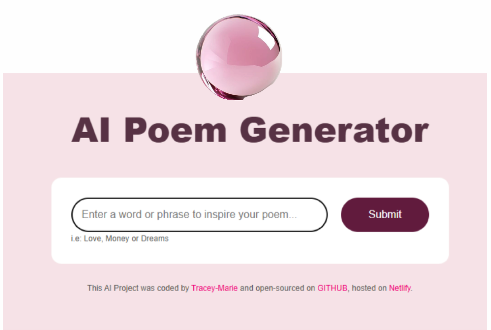
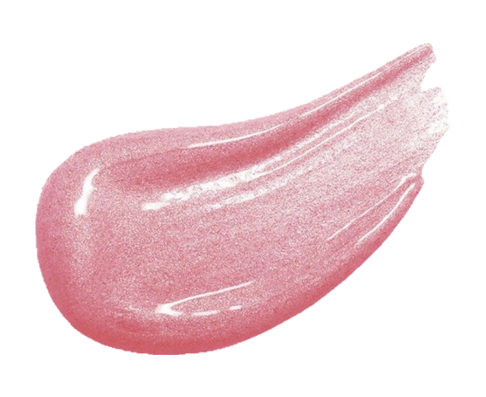
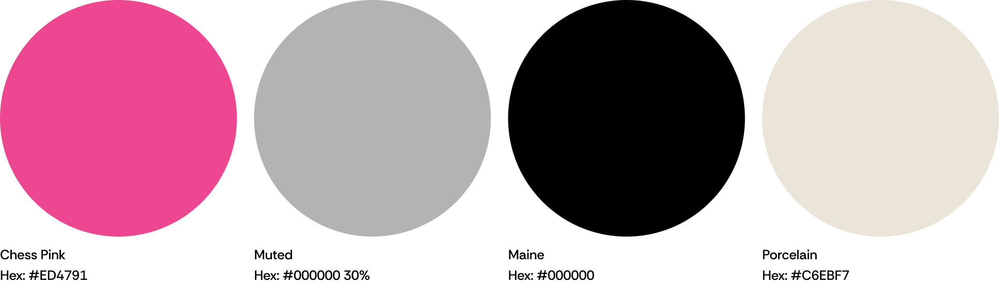
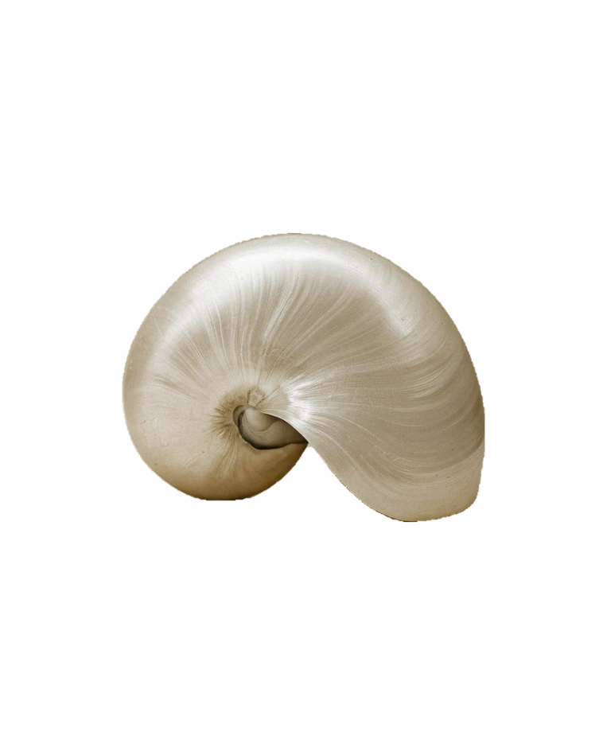
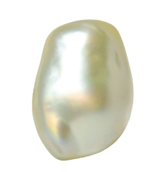

Designing intentional experiences through code and clarity.
I’m Tracey‑Marie, a front‑end developer and emerging UI designer based in London, UK. I build clean, responsive, and visually thoughtful interfaces that merge structure with creativity. My work blends modern web development with design systems and brand identity — creating digital experiences that feel human, modern, and meaningful.
Table of Contents

- 01 my vision
- 02 about me
- 03 brand
- 04 portfolio
- 05 inspiration
- 06 contact me
01 my vision
I create digital experiences that feel intentional, modern, and human. My work blends front‑end development with emerging UI design, bringing clarity, structure, and personality into every project. I believe in design that communicates, code that empowers, and interfaces that feel effortless. My approach is guided by precision, trust, and a commitment to crafting visuals that reflect both strategy and individuality.
As I grow into UI and web design, my focus is on building a design identity that is recognisable, thoughtful, and rooted in my own creative direction — TraceyStudios™. Through this, I aim to merge technical skill with visual storytelling, shaping experiences that are both functional and beautifully considered.
02 about me
I’m a front‑end developer with a growing passion for UI and web design. I care about building digital experiences that feel clear, structured, and thoughtfully crafted. My work blends clean code with modern editorial aesthetics, creating interfaces that are both functional and visually intentional.

I’m driven by precision and clarity — the kind of design that feels effortless because every detail has purpose. At the same time, I value warmth and approachability, bringing personality into my projects through colour, typography, and layout.
I’m currently expanding my skills into UI/UX, design systems, and brand identity.
TraceyStudios™ is the foundation of
that journey — a space where I explore visual direction, creative strategy, and the
intersection between design and
development.

Based in South London, UK — working hybrid and remote.
03 portfolio
My portfolio is a collection of projects that reflect my growth as a front‑end developer and emerging UI designer. Each piece demonstrates my commitment to clean code, thoughtful design, and creating digital experiences that feel intentional and human.

A responsive weather app using HTML, CSS, JavaScript, and API data.Designed with
a clean
layout and simple
interactions.Focuses on clarity, usability, and modern front‑end structure.
Tags:Front‑End • API • UI • Responsive

A minimal quote generator built with JavaScript.Delivers random quotes through a
calm,
editorial interface.Shows my
interest in micro‑interactions and clean UI.
Tags:JavaScript • UI • Micro‑Interactions

A simple poem generator built with JavaScript.Creates short, expressive
poems through a
minimal, calm
interface.Focuses on typography, spacing, and small moments of interaction.
Tags: JavaScript • UI • Micro‑Interactions
04 brand
My inspiration comes from a mix of editorial design, modern web aesthetics, and human‑centred interfaces. I’m drawn to clean layouts, thoughtful typography, and colour palettes that evoke emotion and clarity.

precise • modern • feminine‑strategic • calm • intentional
A modern creative studio crafting intentional, luxury‑minimal digital designs. Clean structure, soft tech aesthetics, and curated visuals — with subtle personality.
studio tones.

05inspo
A curated mix of visuals, textures, and tones that shape the TraceyStudios aesthetic. Minimal, modern, and quietly expressive — where clarity meets creativity.

Visual cue that inspires and drawn from the intersection of art and technology, where each element is carefully considered for its contribution to the TraceyStudios narrative.
- editorial layouts
- intentional palettes
- feminine‑strategic design
- structured minimalism

06 contact me
I’m always open to new opportunities, collaborations, creative projects and design conversations. Every project begins with clarity, curiosity, and a shared vision. If you’d like to work together or just want to say hello, feel free to reach out.